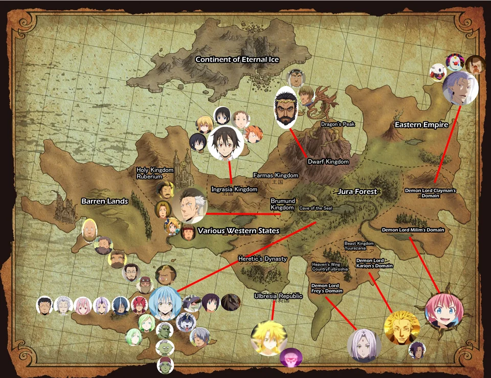

Reincarnated as a Slime follows Satoru Mikami, a regular office worker who dies unexpectedly and is reincarnated in a fantasy world as a slime named Rimuru Tempest. Despite his unassuming form, Rimuru gains extraordinary abilities, such as absorbing and replicating the powers of other creatures. As he navigates this new world, Rimuru befriends monsters and humans alike, building alliances and creating a peaceful community called the Jura Tempest Federation. Along the way, he faces powerful enemies, uncovers mysteries about his new world, and grows into a wise and compassionate leader while striving to unite beings of all races.
Explore the World
Explore Tempest and beyond!